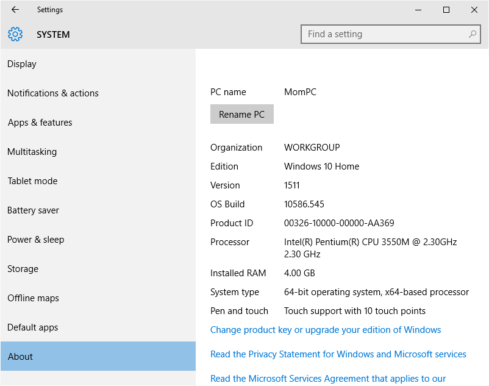

Install On Windows¶
Install Miniconda Python 3.7¶
To get started you need to download the correct version of the Windows miniconda installer for your operating system.
If your computer has a 64-bit operating system (most likely) use the link https://repo.continuum.io/miniconda/Miniconda3-latest-Windows-x86_64.exe If your system has a 32-bit operating system (unlikely) use the link https://repo.continuum.io/miniconda/Miniconda3-latest-Windows-x86.exe If you are unsure of which system you are running, see Detecting 64-bits versus 32-bits Windows Systems.
Wait for it to download. It will place a file called Miniconda3-latest-Windows-x86_64.exe (64-bit) or Miniconda3-latest-Windows-x86.exe (32-bit) in your downloads folder. On my computer using Chrome this is in c:\Users\Wesley\Downloads
Click on the downloaded file to start the installation. When the installer window appears:
Click Next to get started,
Click I Agree to accept the license terms, and
Then click Next to accept the defaults for the next several screens.
When you reach the screen with the Install button, verify the the two Advanced Options checkboxes to Add Anaconda to my PATH environment variable and to Register Anaconda as my default Python 3.7 are both checked. Then click Install.
When the install finishes, click Next then Finish. You can ignore the Anaconda Cloud window that pops up in your browser.
Open a Windows PowerShell window. There are several ways to do this, but the easiest way is probably to right click on the Windows Start menu and select Windows PowerShell from the pop-up that appears.
In the Windows PowerShell window, enter:
conda install pillow
If the conda command is not recognized, it is because the changes to your PATH variable have not propagated correctly. Simply restart your system and try again from opening the Windows PowerShell window.
Enter y at the Proceed prompt.
When the installation completes, close the Windows PowerShell window.
Congratulations, at this point you have fully installed Python and even added an addition module named Pillow that we will use in the next few weeks!
Install Wing IDE 101 and Connect It to Miniconda Python¶
The second half of the installation is the Wing IDE 101 development environment. This is the software that you use to write, edit, and test your Python programs. Wing IDE 101 calls Python to actually run the program. Therefore, we have to download and install Wing IDE 101 and then tie it to the Miniconda version of Python.
Click on the Windows Installer 32-bit and 64-bit. This will download the file wingide-101-6.1.3-1.exe to your download directory. Click on it to install and follow the instructions. As with miniconda, you may need to answer of few questions and accept the license agreement. You should use the defaults settings.
Once the installation completes, open the Wing IDE 101 application. We’ll explore this application in lecture and in lab, but for now we just need to tell Wing about Miniconda Python. To do this, click on the menu and then Edit -> Configure Python
For the Python Executable click on Custom and then Browse to the location for the Miniconda Python executable. On my PC this is c:\Users\Wesley\miniconda3\python . See the following:
{kind=link}
Ignore the Python Path and all other settings and click OK.
Back in the main Wing IDE 101 it may ask you to restart the Python shell. Once you do then you should see at the top of the Python Shell window pane something about “3.7.1 (default, Dec 10 2018, 22:54:23)” etc. If you have this you are all set and the installation is complete!
Detecting 64-bits versus 32-bits Windows Systems¶
To determine if you are running 64- or 32-bit Windows, simply click on the Start key and then select Settings. It will bring up your Computer Settings App. From here
Select System
Select About
This will bring up a system description screen such as below. Your operating system type is shown in the line labeled System type. As shown, my computer is running a 64-bit operating system.
{kind=link}